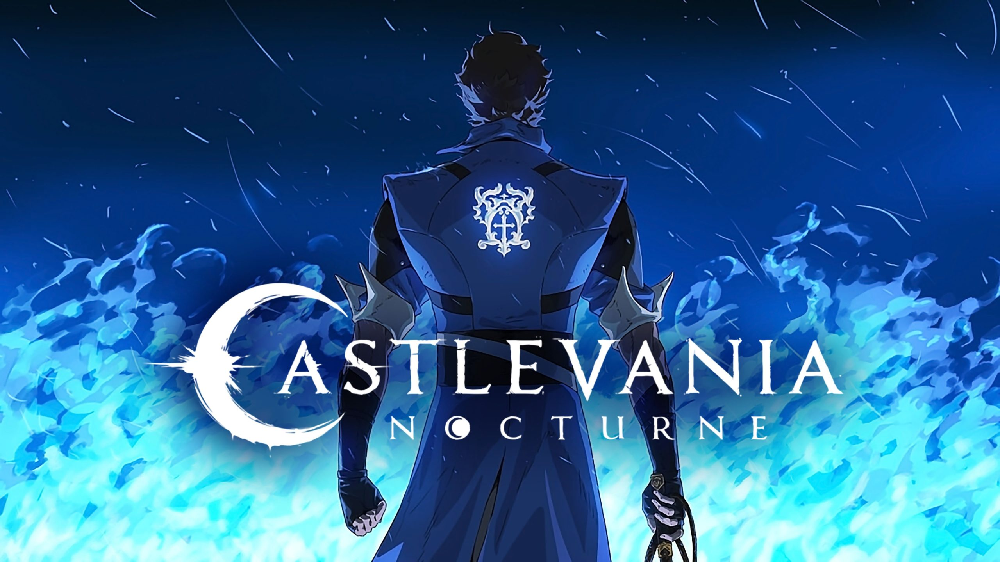
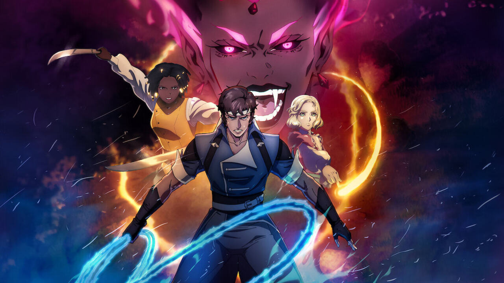
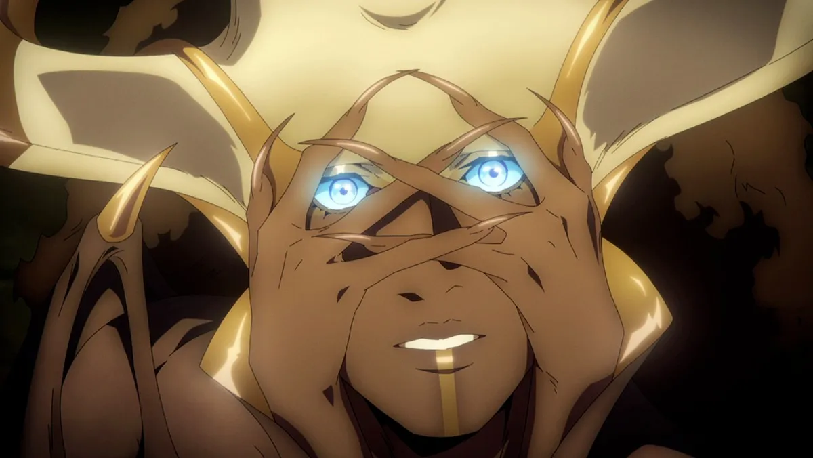

Castlevania: Nocturne
Welcome to the dark world of Castlevania: Nocturne
Dive into the haunting and visually stunning universe of Castlevania: Nocturne, the latest chapter in the critically acclaimed animated series. Set in the turbulent backdrop of the French Revolution, this gripping tale of vengeance and power redefines the vampire lore that fans have come to love.
Plot Overview
In a time of chaos and upheaval, Nocturne follows the story of Richter Belmont, a legendary vampire hunter, as he faces off against a new wave of supernatural threats. With the power of the vampire clan rising amidst societal unrest, Richter must navigate alliances and betrayals while battling dark forces that threaten humanity. Will he rise as a savior, or will the darkness consume him?
Join the Legacy
Castlevania: Nocturne is not just a continuation; it’s an evolution of the beloved franchise. Whether you’re a longtime fan or a newcomer, this series promises a rich, immersive experience filled with suspense, action, and unexpected twists.
Watch Now
Don’t miss out on the thrilling journey of Castlevania: Nocturne. Stream the series exclusively on Netflix and join Richter and his allies as they battle against the forces of darkness.